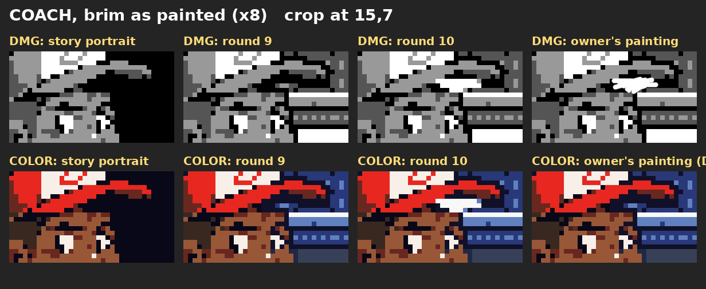
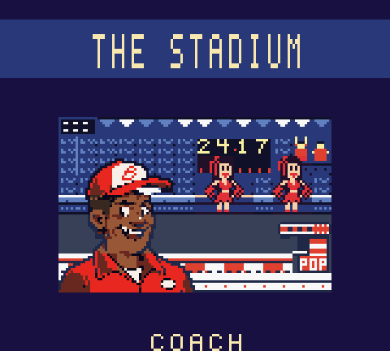
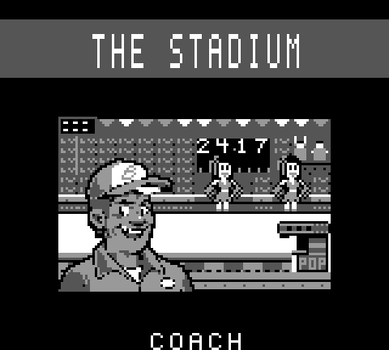
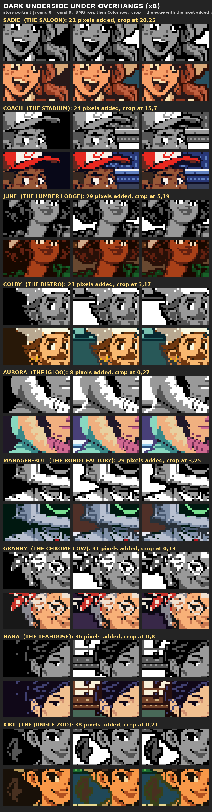

Open questions
One question per card. Each choice has its picture right under it.
1 open · updated 2026-11-16
June's neck, cut at your line
Left of her neck the dark block is gone: the lodge wall runs up to a 2-pixel dark edge at your line. Her hair is unchanged. Not in the test ROM yet.
Is June's neck right now?
Close up

Whole scene, DMG and Color

Q67) Right / still wrong (say where)
Coach's brim, made as you painted
Under the brim tip is now light, joining the rail behind him. The brim keeps its dark line. Not in the test ROM yet.
Is Coach's brim right now?
Close up

Whole scene, Color

Whole scene, DMG

Answered 11-16: "I just wanted that last little bit filled in." Smaller fix being made.
Credits scenes: dark edge under brims and hats
Each picture: story portrait | before | now. Every owner now has a 2-pixel dark edge under brims, hats, hair and chins, where the room shows through. Only edge pixels changed. Not in the test ROM yet.
Does Coach's brim read right now?
Coach's brim, close up

All owners

Answered 11-16: painted light under the brim tip, "More like that." Being made.